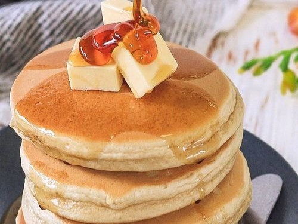

Hotcakes
Publicado el
Hotckes clásicos y esponjosos para endulzar tu día. Es una alternativa genial para gustos variados, se pueden acompañar con lo que más te guste! 💛🥞
⏳Preparación: 15'
🔥Cocción: 10'
🍰Porciones: 10
Ingredientes
- 150grs Harina 0000
- 10grs Polvo para hornear
- Una pizca de sal
- 100grs Azúcar
- 125grs Leche
- 1 Huevo
- 1 cucharada esencia de vainilla
- 130grs Manteca
Preparación
- Mezclar los secos: harina, polvo de hornear, azucar y sal
- Integrar la leche y el huevo
- Batir hasta obtener una mezcla homogenea
- Incorporar vainilla
- Incorporar manteca
- Verter porciones de la mezcla en una sartén caliente
- Cocinar de cada lado hasta que estén dorados
- Acompañar con lo que más te guste